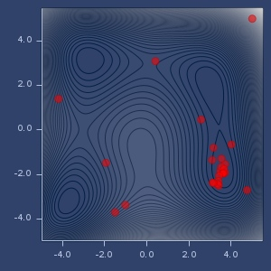
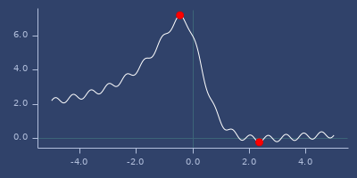
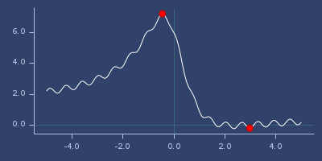
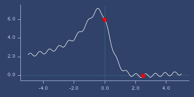
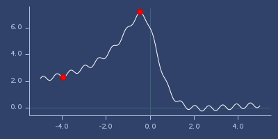
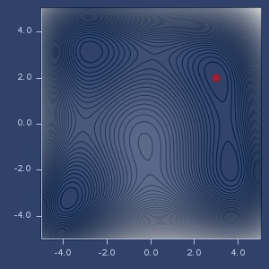
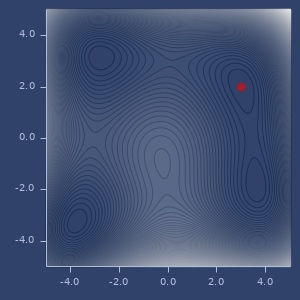
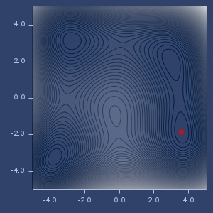

fastmath.optimization
Optimization.
Namespace provides various optimization methods.
- Brent (1d functions)
- Bobyqa (2d+ functions)
- Powell
- Nelder-Mead
- Multidirectional simplex
- CMAES
- Gradient
- Bayesian Optimization (see below)
All optimizers require bounds.
Optimizers
To optimize functions call one of the following functions:
- minimize or maximize - to perform actual optimization
- scan-and-minimize or scan-and-maximize - functions find initial point using brute force and then perform optimization paralelly for best initialization points. Brute force scan is done using jitter low discrepancy sequence generator.
You can also create optimizer (function which performs optimization) by calling minimizer or maximizer. Optimizer accepts initial point.
All above accept:
- one of the optimization method, ie:
:brent,:bobyqa,:nelder-mead,:multidirectional-simplex,:cmaes,:gradient - function to optimize
- parameters as a map
For parameters meaning refer Optim package
Common parameters
:bounds(obligatory) - search ranges for each dimensions as a seqence of low high pairs:initial- initial point other then mid of the bounds as vector:max-evals- maximum number of function evaluations:max-iters- maximum number of algorithm interations:bounded?- should optimizer force to keep search within bounds (some algorithms go outside desired ranges):stats?- return number of iterations and evaluations along with result:reland:abs- relative and absolute accepted errors
For scan-and-... functions additionally you can provide:
:N- number of brute force iterations:n- fraction of N which are used as initial points to parallel optimization:jitter- jitter factor for sequence generator (for scanning domain)
Specific parameters
- BOBYQA -
:number-of-points,:initial-radius,:stopping-radius - Nelder-Mead -
:rho,:khi,:gamma,:sigma,:side-length - Multidirectional simples -
:khi,:gamma,:side-length - CMAES -
:check-feasable-count,:diagonal-only,:stop-fitness,:active-cma?,:population-size - Gradient -
:bracketing-range,:formula(:polak-ribiereor:fletcher-reeves),:gradient-h(finite differentiation step, default:0.01)
Bayesian Optimization
Bayesian optimizer can be used for optimizing expensive to evaluate black box functions. Refer this article or this article
Categories
Other vars: bayesian-optimization maximize maximizer minimize minimizer scan-and-maximize scan-and-minimize
bayesian-optimization
(bayesian-optimization f {:keys [warm-up init-points bounds utility-function-type utility-param kernel kscale jitter noise optimizer optimizer-params normalize?], :or {utility-function-type :ucb, init-points 3, jitter 0.25, noise 1.0E-8, utility-param (if (#{:ei :poi} utility-function-type) 0.001 2.576), warm-up (* (count bounds) 1000), normalize? true, kernel (k/kernel :mattern-52), kscale 1.0}})Bayesian optimizer
Parameters are:
:warm-up- number of brute force iterations to find maximum of utility function:init-points- number of initial evaluation before bayesian optimization starts. Points are selected using jittered low discrepancy sequence generator (see: jittered-sequence-generator:bounds- bounds for each dimension:utility-function-type- one of:ei,:poior:ucb:utility-param- parameter for utility function (kappa forucband xi foreiandpoi):kernel- kernel, default:mattern-52, see fastmath.kernel:kscale- scaling factor for kernel:jitter- jitter factor for sequence generator (used to find initial points):noise- noise (lambda) factor for gaussian process:optimizer- name of optimizer (used to optimized utility function):optimizer-params- optional parameters for optimizer:normalize?- normalize data in gaussian process?
Returns lazy sequence with consecutive executions. Each step consist:
:x- maximumx:y- value:xs- list of all visited x’s:ys- list of values for every visited x:gp- current gaussian process regression instance:util-fn- current utility function:util-best- best x in utility function
Examples
Usage
(let [bounds [[-5.0 5.0] [-5.0 5.0]]
f (fn [x y]
(+ (m/sq (+ (* x x) y -11.0)) (m/sq (+ x (* y y) -7.0))))]
(nth (bayesian-optimization
(fn [x y] (- (f x y)))
{:bounds bounds, :init-points 5, :utility-function-type :poi})
10))
;;=> {:gp
;;=> #object[fastmath.gp.GaussianProcess 0x28b5ba47 "fastmath.gp.GaussianProcess@28b5ba47"],
;;=> :util-best (3.3729488879147964 -2.620438835444758),
;;=> :util-fn #,
;;=> :x (3.3729488879147964 -2.620438835444758),
;;=> :xs ((3.3729488879147964 -2.620438835444758)
;;=> (3.36187557517831 -2.6237903194805474)
;;=> (3.351828505436199 -2.6264359739765966)
;;=> (3.3060837306516566 -2.640935863617064)
;;=> (3.286454362856877 -2.6473628941707936)
;;=> (3.265767305740245 -2.6544534772895774)
;;=> (3.2419800358378614 -2.6637697495855432)
;;=> (3.190317165852559 -2.684697918465639)
;;=> (3.172005847659775 -2.6921006238846394)
;;=> (3.1451516934935335 -2.7029851461345773)
;;=> (3.1427077525951934 -2.7039793547117545)
;;=> [-1.433722730094984 -4.137307884094992]
;;=> [-4.714882264268117 1.9098365364159786]
;;=> [3.1397031994440194 -2.7052550947300946]
;;=> [0.4479931778387405 2.8837298590521643]
;;=> [-2.031539012553959 -1.389874414200587]),
;;=> :y -15.52930903134845,
;;=> :ys (-15.52930903134845
;;=> -15.927245046746147
;;=> -16.282604887285657
;;=> -18.110651852307072
;;=> -18.959945083044893
;;=> -19.904039697074026
;;=> -21.083425811017257
;;=> -23.841924184622968
;;=> -24.872757395829396
;;=> -26.435102867433862
;;=> -26.580321983031297
;;=> -246.53690626818835
;;=> -237.7413705814692
;;=> -26.76191499591264
;;=> -65.76759583573417
;;=> -118.67959361768936)} Bayesian optimization points
maximize
(maximize method f config)Maximize given function.
Parameters: optimization method, function and configuration.
Examples
Usage
(let [bounds [[-5.0 5.0]]
f (fn [x]
(+ (* 0.2 (m/sin (* 10.0 x)))
(/ (+ 6.0 (- (* x x) (* 5.0 x))) (inc (* x x)))))]
{:powell (maximize :powell f {:bounds bounds}),
:brent (maximize :brent f {:bounds bounds}),
:bfgs (maximize :bfgs f {:bounds bounds})})
;;=> {:bfgs [(-0.4523106913336431) 7.224689671203531],
;;=> :brent [(-0.4523106823170646) 7.224689671203529],
;;=> :powell [(-0.4522927913307559) 7.224689666542709]}maximizer
(maximizer method f config)Create optimizer which maximizer function.
Returns function which performs optimization for optionally given initial point.
Examples
Usage
(let [bounds [[-5.0 5.0]]
f (fn [x]
(+ (* 0.2 (m/sin (* 10.0 x)))
(/ (+ 6.0 (- (* x x) (* 5.0 x))) (inc (* x x)))))
optimizer (maximizer :cmaes f {:bounds bounds})]
{:optimizer optimizer,
:run-1 (optimizer),
:run-2 (optimizer [4.5]),
:run-3 (optimizer [-4.5])})
;;=> {:optimizer #,
;;=> :run-1 [(-0.17915749236498976) 6.517287720905591],
;;=> :run-2 [(0.6671021467828373) 2.227512773020161],
;;=> :run-3 [(-0.9516825400712801) 6.139029174147362]} minimize
(minimize method f config)Minimize given function.
Parameters: optimization method, function and configuration.
Examples
1d function
(let [bounds [[-5.0 5.0]]
f (fn [x]
(+ (* 0.2 (m/sin (* 10.0 x)))
(/ (+ 6.0 (- (* x x) (* 5.0 x))) (inc (* x x)))))]
{:powell (minimize :powell f {:bounds bounds}),
:brent (minimize :brent f {:bounds bounds}),
:brent-with-initial-point
(minimize :brent f {:bounds bounds, :initial [2.0]})})
;;=> {:brent [(-3.947569586073323) 2.2959519482739297],
;;=> :brent-with-initial-point [(2.979593427579756) -0.20178173314322778],
;;=> :powell [(2.3572022329682807) -0.23501046849989368]}2d function
(let [bounds [[-5.0 5.0] [-5.0 5.0]]
f (fn [x y]
(+ (m/sq (+ (* x x) y -11.0)) (m/sq (+ x (* y y) -7.0))))]
{:bobyqa (minimize :bobyqa f {:bounds bounds}),
:gradient (minimize :gradient f {:bounds bounds}),
:bfgs (minimize :bfgs f {:bounds bounds})})
;;=> {:bfgs [(2.9999999998534097 1.9999999988326103) 2.7385222287082803E-17],
;;=> :bobyqa [(3.5844283403693833 -1.848126526921083)
;;=> 1.1846390625694734E-19],
;;=> :gradient [(2.999999970879802 2.0000000603184582)
;;=> 5.80971508134794E-14]}With stats
(minimize :gradient
(fn* [p1__33957#] (m/sin p1__33957#))
{:bounds [[-5 5]], :stats? true})
;;=> {:evaluations 22, :iterations 3, :result [(-1.5707963273466874) -1.0]}min/max of f using
:powelloptimizer
min/max of f using
:nelder-meadoptimizer
min/max of f using
:multidirectional-simplexoptimizer
min/max of f using
:cmaesoptimizer
min/max of f using
:gradientoptimizer
min/max of f using
:brentoptimizer
min/max of f using
:powelloptimizer

min/max of f using
:nelder-meadoptimizer
min/max of f using
:multidirectional-simplexoptimizer

min/max of f using
:cmaesoptimizer
min/max of f using
:gradientoptimizer
min/max of f using
:bobyqaoptimizer
minimizer
(minimizer method f config)Create optimizer which minimizes function.
Returns function which performs optimization for optionally given initial point.
Examples
Usage
(let [bounds [[-5.0 5.0]]
f (fn [x]
(+ (* 0.2 (m/sin (* 10.0 x)))
(/ (+ 6.0 (- (* x x) (* 5.0 x))) (inc (* x x)))))
optimizer (minimizer :brent f {:bounds bounds})]
{:optimizer optimizer,
:run-1 (optimizer),
:run-2 (optimizer [4.5]),
:run-3 (optimizer [-4.5])})
;;=> {:optimizer #,
;;=> :run-1 [(-3.947569586073323) 2.2959519482739297],
;;=> :run-2 [(2.357114991599655) -0.2350104692683484],
;;=> :run-3 [(-4.570514545168775) 2.074718566761628]} scan-and-maximize
Examples
Usage
(let [bounds [[-5.0 5.0]]
f (fn [x]
(+ (* 0.2 (m/sin (* 10.0 x)))
(/ (+ 6.0 (- (* x x) (* 5.0 x))) (inc (* x x)))))]
{:powell (scan-and-maximize :powell f {:bounds bounds}),
:brent (scan-and-maximize :brent f {:bounds bounds}),
:bfgs (scan-and-maximize :bfgs f {:bounds bounds})})
;;=> {:bfgs [(-0.4523106924983422) 7.224689671203531],
;;=> :brent [(-0.4523106952522764) 7.224689671203531],
;;=> :powell [(-0.45230980862870857) 7.224689671192147]}scan-and-minimize
Examples
1d function
(let [bounds [[-5.0 5.0]]
f (fn [x]
(+ (* 0.2 (m/sin (* 10.0 x)))
(/ (+ 6.0 (- (* x x) (* 5.0 x))) (inc (* x x)))))]
{:powell (scan-and-minimize :powell f {:bounds bounds}),
:brent (scan-and-minimize :brent f {:bounds bounds}),
:bfgs (scan-and-minimize :bfgs f {:bounds bounds})})
;;=> {:bfgs [(2.35711490562854) -0.23501046926842561],
;;=> :brent [(2.357114837258413) -0.23501046926837937],
;;=> :powell [(2.3567778686638596) -0.23501046922629149]}2d function
(let [bounds [[-5.0 5.0] [-5.0 5.0]]
f (fn [x y]
(+ (m/sq (+ (* x x) y -11.0)) (m/sq (+ x (* y y) -7.0))))]
{:bobyqa (scan-and-minimize :bobyqa f {:bounds bounds}),
:gradient (scan-and-minimize :gradient f {:bounds bounds}),
:bfgs (scan-and-minimize :bfgs f {:bounds bounds})})
;;=> {:bfgs [(2.999999998925092 1.99999999832212) 1.2668195871859995E-16],
;;=> :bobyqa [(2.9999999999935567 2.000000000056682)
;;=> 4.8850752449334874E-20],
;;=> :gradient [(-2.80511808703194 3.1313125185420416)
;;=> 3.590446894468834E-18]}